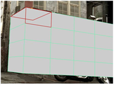
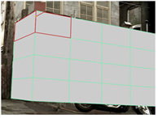
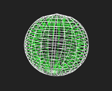

To edit objects:
| 1. | Activate Edit Mode by selecting from the ModelBuilder toolbar. |
| 2. | Click the Select object button in the ModelBuilder toolbar and select an object. |
| 3. | Edit the object as necessary: |
• To translate, rotate, or scale the selected object, drag the transform handles that appear on it. To move the pivot point for the transform handles, press Ctrl/Cmd+Alt while dragging on the center of the transformation overlay.
TIP: If necessary, you can also use the controls at the top of the Viewer to set the initial position and alignment of the transform handles (that is, the position used whenever you change the selection). For more information, see Setting the Initial Action Center for Translate, Rotate, and Scale.
• To carve the selected objects, right-click on them and select carve. A colored border appears around the Viewer window to indicate that the action is in progress. Click on an edge or vertex to begin a carve. All of the surrounding faces are highlighted in red. Click anywhere inside a highlighted face, or on an edge or vertex of a highlighted face, to carve an edge between the previous vertex and the place you just clicked.
|
 |
 |
| Highlighted faces. | Carving a new edge inside the highlighted faces. |
To carve out a freehand edge, hold down Ctrl/Cmd+Shift and drag.
• To mirror the selected object along its x axis, right-click on the object and select mirror x.
• To mirror the selected object along its y axis, right-click on the object and select mirror y.
• To mirror the selected object along its x axis, right-click on the object and select mirror z.
• To invert the selected object's normals, right-click on the object and select flip face normals. This can be useful, for example, if your camera is located inside the selected object.
TIP: To see the normals, press S on the Viewer to display the Viewer Settings, go to the 3D tab, and activate the show primitive normals button  .
.

|
 |
| Before flip face normals. | After flip face normals. |
• To delete the selected object, select delete objects from the right-click menu (or press Delete).
|
|